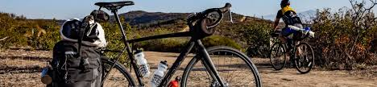
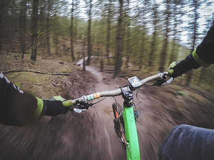

Pedalando em direção ao bem-estar
Segundo a Wikipedia, "Ciclismo é a prática de se usar uma bicicleta, seja como esporte ou forma de locomoção". Deste modo, o ciclismo baseia-se na utilização da bicicleta como meio de transporte, principalmente para o lazer/esporte, ou até mesmo como apenas um meio de locomoção, para reduzir o tempo de uma caminhada. Surgido na Inglaterra, em meados do século XIX, o ciclismo vem se tornando uma atividade cada vez mais comum, que inclusive ganhou bastante força durante e "após" a pandemia do Covid-19, pois foi a maneira que muitas pessoas encontraram para se exercitar após longos tempos de quarentena.

Benefícios
O cicismo traz diversos benefícios, entre eles podemos citar:
- Emagrecimento
- O ciclismo é uma ótima atividade física para a queima de calorias.
- Bem estar
- Pedalar aumenta a produção de endorfina e serotonina, os famosos "hormônios da felicidade".
- Vida social
- Durante seus passeios, é possível conhecer diversar novas pessoas que compartilhem do mesmo hobby, ampliando ainda mais seu círculo de amizades.
- Contato com a natureza
- Andar de bicicleta em trilhas na floresta e áreas rurais é uma ótima maneira de aumentar o contato com a natureza e fugir do stress, além de conhecer lugares novos.
- Economia
- Além do mais, o ciclismo ainda ajuda a economizar dinheiro, tendo em vista que, quando usado para locomoção ao invés de um carro ou moto, evita o gasto com combustível.
- Poluição
- A bicicleta é um dos poucos meios de transporte que não emitem gases poluentes.
Como visto, essa prática pode agregar muitos benefícios em nossas vidas. Porém, não é apenas isso, pedalar ainda é muito benéfico para a sua saúde corporal, pois:
- Melhora a resitência muscular
- Reduz o colosterol
- Regula a pressão arterial
- Melhora a circulação sanguínea
- Aumenta seu fôlego
- Elimina toxinas do corpo
- Controla a glicemia do sangue

Por fim, pode-se listar as diferentes modalidades do ciclismo, as quais podem ser escolhidas de acordo com as suas preferências, mesmo que esse hobby não precise necessariamente seguir alguma das modalidades. As 6 principais são:
- Ciclismo de estrada
- Ciclismo de pista
- Mountain Bike (MTB)
- Dowhill
- BMX (Bicicross)
- Gravel
